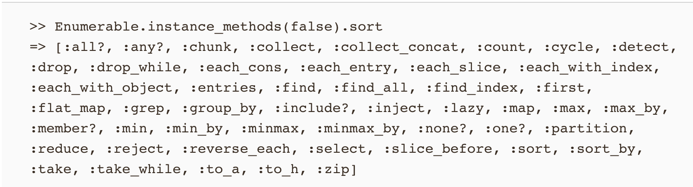
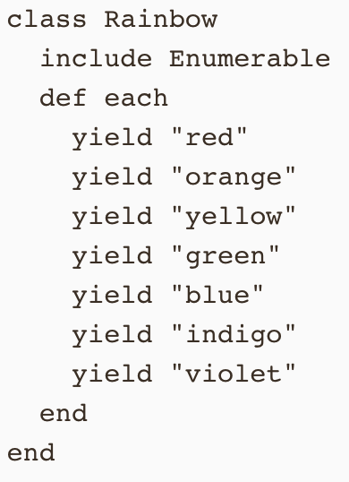
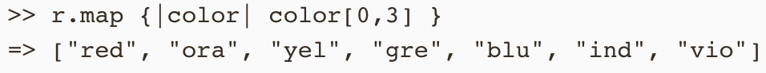

Enumerables are a valuable tool built into the Ruby class structure. It also one of the few methods you don’t immediately understand by just looking at the name. Enumerables allow to search for particular things in a collection of items. It can be an array, a hash, a set, or a range. The foundation of what makes enumerable work is the each method. For those that don’t remember each, it allows you to work with each piece of information in the whatever collection you are working with and perform the same task, or code block, to that information. Enumerable uses each to organize and separate the information so that you can call enumerable methods on objects created within that class. They will allow you to gather very value information about whatever collection you are working with, such as what strings start with this letter, which numbers are greater or less than a particular number, what’s the first item that meets either of those criteria. You can map the first so many characters of the strings. You can even reject items that meet a certain criteria. The great thing about enumerables is that they let you quickly locate a particular piece, or pieces, of information within a collection without having to do long iterations to find it yourself. Using enumerable can save you plenty of steps and lines of code. Below is a list of enumerables you can use.
One very helpful enumerable is map. It is very similar and is used just like the each method, but unlike the each method will allow you to return a different value. When you use each it will always return the original array. Map, however will let you return the value created through the code block used with map. Looking at the example below you will see an enumerable created with the class rainbow. You can see how similar map is to each, but you can also see how it returns the first three letters of each string as a new array. If you were using the each method you would still have the original array returned. When developing it’s all about using what is right for the situation at hand and map is useful when you want to use the each method, but want to return something different.
 